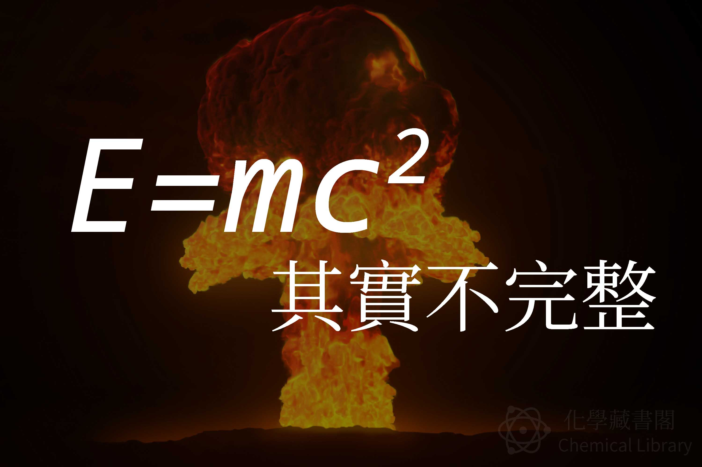

E=mc2 其實不完整
2017年5月5日

公式解說
E=mc2
這公式是指說，當物體的質量，完全轉換成能量， E 代表能量， m 是物體的質量， c 是光速。這是只針對靜態物體的能量質量轉換，動態的有另一個公式：
E2 = (pc)2 + (mc2)2
p 是指運動中物體的能量，乘上光速的平方
這公式指出質量守恆是有問題的，實際也在原子彈發明之後證實
實際計算
E( J )=m( Kg ) x c2( m/s )
c為光速=299792458(m/s)
假設有1kg的物體，總共可以換成
1 Kg x (299792458)2 =89875517873681764 J
上面計算的都是靜態物體，但是當他換成動態時，也間接證明的任何有質量的物體都不可能達到光速：
m=0時，E2=(pc)2，像光沒有質量，所以才能達到光速(廢話)
當 m=0.00~(很多0)~01，E2≠(pc)2，就代表這個物體不能移動到光速，所以 299792.458(km/s) 可能是宇宙中最極限的速度了